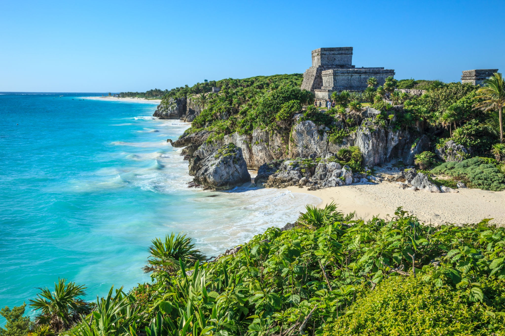
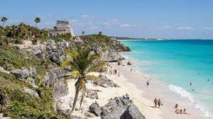

El antiguo puerto amurallado de Tulum fue habitado hasta poco antes de la llegada de los españoles y
fue uno de los puertos más dinámicos del mundo maya aproximadamente hace 1,500 años.
Tulum es la puerta de entrada a la Reserva de la Biósfera Sian Ka’an que fue declarada Patrimonio de
la Humanidad por la UNESCO en 1987, un ecosistema de los más exuberantes del planeta que incluye playas,
arrecifes de coral, una abundante selva tropical, dunas y cenotes.

Características:
*Tulum, que significa “muralla” en maya, recibió en sus orígenes el nombre de Zamá , que significa “amanecer”. Fue un importante puerto maya entre los siglos XIII y XVI; sus principales construcciones son del período post clásico tardío.
*A su alrededor existen abundantes manglares y ciénegas.
*La zona es abundante en árboles de maderas finas, como caoba, cedro y chicle.
*Los principales cultivos son el zapote, la papaya, la guava y la palma cocotera.
*El clima es cálido subhúmedo y con lluvias en el verano. La temperatura promedio de 26° C, clásica de selvas mediana y baja.
El Pueblo Mágico de Tulum es un punto obligado y la mejor muestra del encanto maya gracias a sus ruinas situadas al borde del Mar Caribe; además de ser la única zona arqueológica que se asienta a la orilla de un acantilado, bajo el cual se encuentra la playa del Paraíso, una de las mejores y más hermosas playas de la Riviera Maya y muy probablemente, la más retratada.
Atractivos:
Aktun Chen
Buceo
Cenote Cristal
Cenote Escondido
Cenote el Calavera
El Castillo, Kukulcán, Templo de los Frescos y el Templo del Dios Descendente.
Esnórquel
Gran Cenote de Tulum
Museo Natural Subacuático Arrecifes de Tulum
Parque Nacional Tulum
Playa paraíso
Zona Arqueológica de Cobá
Zona Arqueológica de Tulum
Festividades
1. Festejo de la Cruz Parlante, julio.
2. Festival de la Tortuga Marina, 15 - 17 octubre.

Tulum, Quintana Roo
En el punto más al sur de la Riviera Maya se sitúa este pueblo místico y acogedor, de calles
llenas de terrazas, de tiendas de artesanías y bares; con gente que va y viene en bici. Su playa
comparte las historias de los navegantes mayas. A la lejanía, se alza El Castillo, desde donde se
mira mejor el Caribe y donde en primavera se reciben los primeros rayos de sol sobre la puerta de
salida de este edificio.